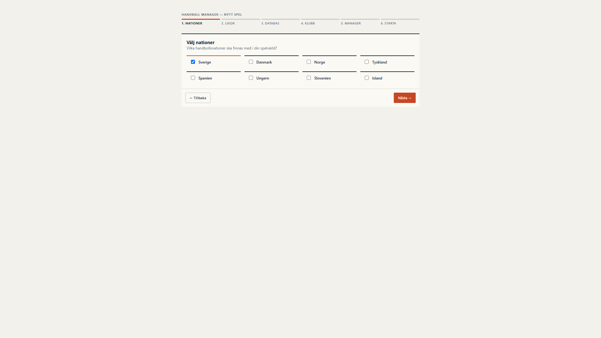
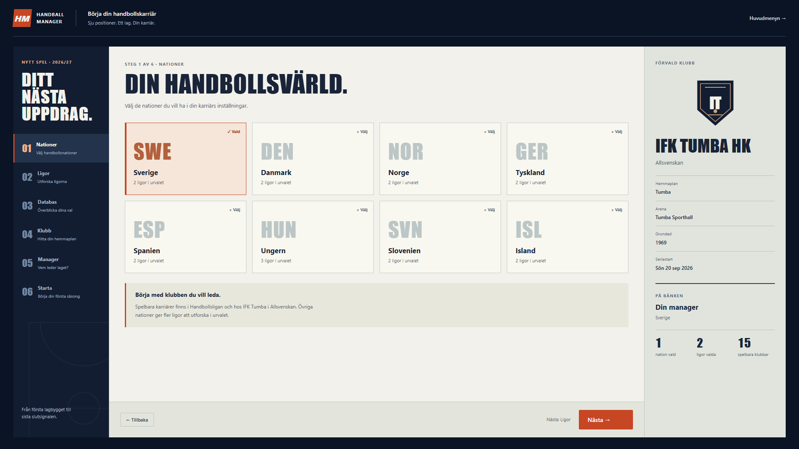

Preserved game identity. Deeper career entry, coaching, progression and sporting context.


Actual isolated Chromium captures at both widths. Open either image for full resolution. Match results can differ between separate QA careers; recorded season milestones use the exact same canonical checkpoint.